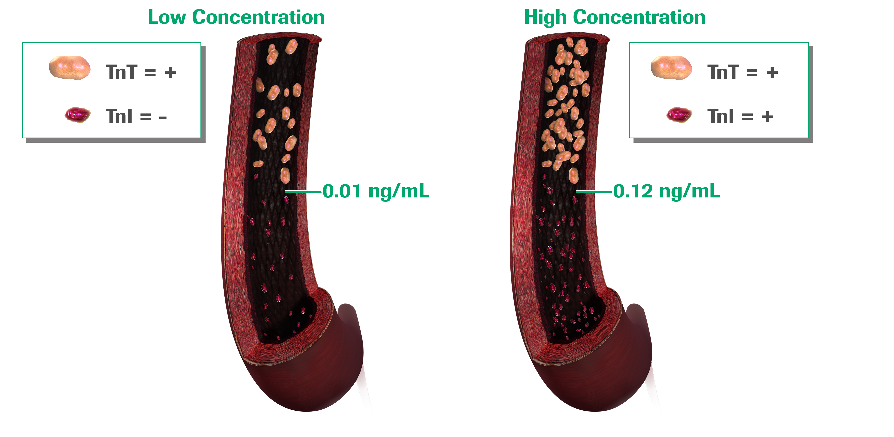

Not all Troponin assays are able to measure Troponin at low concentrations
Don’t you want to use the most sensitive assay available?
Isn’t it beneficial to identify those patients at low concentration so that you can intervene as quickly as possible or at least start therapeutic intervention?
Don’t you see value in identifying at low concentrations rather than waiting for them to get Troponin to increase to a level where every assay would give a positive result?